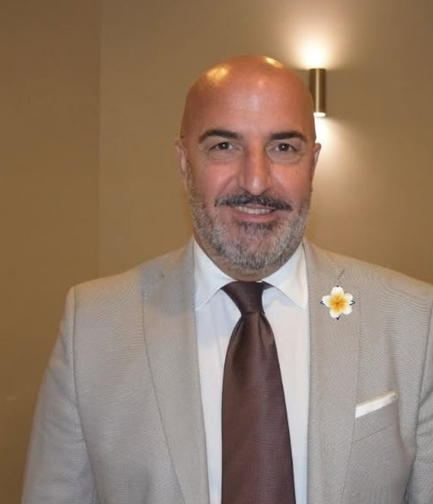

Sotto la superficie accade molto più di quanto immaginiamo. Queste sono alcune delle aree che la misurazione può aiutare a esplorare.
Integratori, diete, protocolli: si sceglie spesso per abitudine, per moda, per ipotesi o per sensazione. Il dato, quasi sempre, manca.
Informazioni valide per tutti, pensate per nessuno. Difficilmente raccontano la tua situazione reale.
Le tendenze cambiano in fretta. Decidere sull'onda del momento raramente è un metodo solido.
Come ci sentiamo è un indizio, non un dato. Prima di muoversi, ha senso misurare.
L'Italia è il primo mercato europeo degli integratori alimentari. I numeri sono impressionanti — ma la domanda più importante è un'altra.
Ma c'è una domanda che vale molto più di questi numeri: su quali basi scegliamo ciò che assumiamo?
Per questo abbiamo creato un sistema.
Non ti chiediamo di indovinare cosa potrebbe servirti. Ti aiutiamo a partire da ciò che il tuo corpo sta già raccontando.
Test specifici in auto-somministrazione.
Otteniamo informazioni relative ai parametri analizzati.
I risultati vengono elaborati secondo il percorso previsto.
Le informazioni disponibili verranno utilizzate per individuare il percorso personalizzato previsto dal servizio.
Quattro misurazioni domiciliari, ognuna con la propria finalità dichiarata.
Misura 11 acidi grassi nel sangue e restituisce sei indicatori dedicati all'equilibrio Omega-6:3.
Apri i dettagli →Analizza lo stato della vitamina D nel sangue e fornisce indicazioni personalizzate per ottimizzarlo.
Apri i dettagli →Monitora la glicemia a lungo termine attraverso la misurazione dell'emoglobina glicata HbA1c.
Apri i dettagli →Misura tre metaboliti nel sangue per offrire informazioni sulla funzione intestinale e metabolica.
Apri i dettagli →Ogni test restituisce indicatori precisi, letti insieme e riportati in un report comprensibile.
Raccogliamo dati oggettivi con test scientifici avanzati.
Analizziamo i risultati per comprendere lo stato di equilibrio del tuo corpo.
Definiamo un piano personalizzato basato su dati e obiettivi reali.
È la differenza tra una nutrizione basata sull'ipotesi e un percorso basato sulla misurazione.
Ricevi il materiale e le istruzioni previste dalla soluzione scelta.
Effettua la raccolta domiciliare seguendo attentamente le indicazioni ufficiali.
Spedisci il campione secondo la procedura indicata dal fornitore del test.
Consulta le informazioni prodotte e rivolgiti a un professionista quando necessario.
Quando previsto dal singolo percorso, la ripetizione della misurazione permette di confrontare i dati con quelli precedenti e osservare l'evoluzione nel tempo.
I campioni raccolti vengono trasmessi a VITAS Analytical Services, il laboratorio di analisi che ne esegue le procedure secondo i propri standard. Il report viene restituito attraverso la piattaforma digitale del percorso, in completo anonimato.
VITAS è un laboratorio a contratto per analisi chimiche a gestione indipendente e certificato GMP, con sede a Oslo, in Norvegia.
Il campione viaggia legato a un codice personale.
La piattaforma mette in contatto richiedente e laboratorio.
Dalla registrazione al report, tutto trasparente.
Che tu voglia conoscere meglio la tua situazione, integrare nuovi strumenti nella tua attività professionale oppure costruire una nuova opportunità professionale, puoi scegliere il percorso più adatto a te.
Non devi indovinare cosa potrebbe servirti. Puoi partire da un test, ricevere il tuo report e comprendere cosa emerge dai dati analizzati.
Se sei un medico, farmacista, nutrizionista, terapista, erborista, personal trainer, professionista della salute e del benessere o operi in un settore collegato, puoi integrare nel tuo lavoro strumenti innovativi basati sulla misurazione.
Non devi essere un medico. Non devi essere un nutrizionista. Non devi essere un venditore. Non devi avere competenze specifiche nel settore. Devi avere voglia di imparare e di costruire.

Mi chiamo Domenico Servello, ma per tutti sono semplicemente Mimmo. Sono un imprenditore e networker con oltre trent'anni di esperienza e ho ideato Misura partendo da un'esigenza concreta: offrire alle persone un accesso più semplice, ordinato e riservato ai test domiciliari di autovalutazione, da conoscere e utilizzare con maggiore comodità, nei propri tempi e nella discrezione della propria casa.
"Rendere la conoscenza più vicina, la scelta più semplice e il percorso più rispettoso dei tempi di ciascuno."
Se vuoi sapere chi sono, come è nato questo progetto e per quale motivo ho scelto di esserci, ho raccontato tutto in una lettera aperta. La puoi leggere quando vuoi, senza lasciare la pagina: basta un click.
Il mio ruolo: sono il fondatore e referente informativo del progetto. Non sono un medico né un nutrizionista e non svolgo attività riservate alle professioni sanitarie: non formulo diagnosi, non effettuo interpretazioni cliniche dei risultati e non prescrivo alimentazione, terapie o trattamenti. Il mio ruolo è mettere in relazione persona, informazioni e percorso, fornendo chiarezza e accompagnamento.
I test hanno finalità specifiche e non sostituiscono una visita, una diagnosi o una consulenza professionale.
Non devi conoscere già quale test scegliere: raccontami cosa vuoi sapere e ti spiegherò come funziona il percorso e quali possibilità sono disponibili. Non c'è nessun modulo da compilare: scegli il canale che preferisci tra email, WhatsApp e telefono. Il primo confronto è esclusivamente informativo e non comporta alcun obbligo.
Questo sito non raccoglie dati personali: non ci sono form, registrazioni o database. Il contatto avviene direttamente con me, tramite il canale che preferisci. Per la tua riservatezza, ti invito a non inviare referti o dati sanitari: ne parliamo a voce, con calma.
Se vuoi ricevere informazioni sui test o sul progetto, contattami con il canale che preferisci: ti rispondo personalmente, senza passare da form, registrazioni o database. Nessun obbligo, nessun automatismo.
Il primo confronto è esclusivamente informativo e senza alcun obbligo. Per tutelare la tua riservatezza, ti chiedo di non inviare referti, farmaci o dati sanitari tramite questi canali: eventuali approfondimenti li valutiamo insieme, nel rispetto della normativa sulla privacy.
Un test domiciliare su campione di sangue essiccato che offre una fotografia del profilo degli acidi grassi e dell'equilibrio Omega-6:3.
Il report considera acidi grassi saturi, monoinsaturi Omega-9 e polinsaturi Omega-6 e Omega-3, tra cui EPA, DPA e DHA.
Il campione viene raccolto con una semplice puntura sul dito e alcune gocce di sangue su carta da filtro. Il codice personale del test consente di registrare il campione e consultare il report. Il produttore propone la ripetizione dopo circa 120 giorni per confrontare i progressi.
Un'analisi su sangue capillare che rileva lo stato attuale della vitamina D e restituisce indicazioni personalizzate per mantenerlo o migliorarlo.
Il test determina la concentrazione ematica di 25-idrossivitamina D, indicata anche come 25(OH)D o calcidiolo, utilizzata per valutare lo stato complessivo della vitamina D.
Il risultato viene presentato in una grafica di facile lettura e accompagnato da raccomandazioni personalizzate sulla base del valore rilevato.
La raccolta avviene tramite una puntura sul polpastrello e 1–2 gocce di sangue su carta da filtro. Il campione viene gestito con un ID personale anonimo. Il produttore consiglia di ripetere il test ogni 120 giorni per monitorare le variazioni stagionali e i progressi.
Un test domiciliare che misura l'emoglobina glicata HbA1c, utilizzata per osservare l'andamento della glicemia nel lungo periodo.
L'HbA1c rappresenta la quota di emoglobina alla quale si è legato il glucosio. Il valore offre un'indicazione dell'esposizione media alla glicemia nel periodo precedente al test.
Il percorso include un questionario sulle abitudini generali e, quando applicabile, una valutazione del rischio di sviluppare diabete di tipo 2, oltre a indicazioni personalizzate per migliorare lo stile di vita.
La raccolta avviene a domicilio tramite gocce di sangue essiccato. Il campione è identificato da un codice anonimo e viene analizzato da un laboratorio indipendente. Il risultato deve essere letto nel contesto della propria storia clinica con il supporto di un professionista sanitario.
Un test domiciliare su sangue essiccato che osserva l'attività funzionale del microbiota attraverso metaboliti collegati al triptofano, senza richiedere un campione di feci.
Il report integra metaboliti e rapporti tra i valori misurati in una lettura sintetica dell'equilibrio intestinale, immunitario e metabolico, accompagnata da suggerimenti personalizzati con attenzione a fibre e polifenoli.
Il produttore indica di eseguire il prelievo al mattino, a stomaco vuoto dopo almeno 10 ore di digiuno, utilizzando alcune gocce di sangue raccolte dal polpastrello. Il campione è associato a un codice anonimo e viene inviato al laboratorio per l'analisi.
Mi chiamo Domenico Servello, ma per tutti sono semplicemente Mimmo.
Sono un imprenditore e networker con oltre trent'anni di esperienza. Nella mia vita professionale ho attraversato settori molto diversi, dall'intrattenimento alla tecnologia, dalla sicurezza alla comunicazione e all'imprenditoria.
Se c'è una cosa che ha sempre accompagnato le mie scelte è la ricerca dell'innovazione.
Mi ha sempre interessato ciò che ancora pochi conoscono, ciò che oggi può sembrare nuovo ma che domani potrebbe diventare parte della quotidianità di tutti.
Non ho mai amato limitarmi a seguire ciò che esiste già. Ho sempre cercato di capire cosa sta arrivando e, quando ne ho riconosciuto il valore, ho scelto di esserci.
È con questo spirito che nasce Misura – Test & Benessere.
L'idea nasce da una convinzione molto semplice:
Oggi la ricerca scientifica e la tecnologia ci permettono di ottenere informazioni che possono aiutarci a conoscere meglio il nostro organismo e a prendere decisioni più consapevoli.
Misura nasce per rendere questo approccio più accessibile, attraverso strumenti di misurazione, informazioni e percorsi basati sui dati.
Non voglio sostituirmi ai professionisti sanitari e non è questo lo scopo del progetto. Il mio ruolo è quello di far conoscere strumenti e possibilità che possono aiutare le persone a comprendere meglio i propri dati e a confrontarsi, quando necessario, con i professionisti competenti.
Il principio è semplice:
Il progetto nasce inoltre dalla partnership con una multinazionale europea con oltre 21 anni di storia, presente in più di 100 Paesi e quotata sul Nasdaq First North. Una realtà internazionale che ha sviluppato strumenti, ricerca e tecnologie che oggi stiamo contribuendo a portare e sviluppare anche in Italia.
Ed è proprio questa fase che mi entusiasma.
Perché l'Italia è ancora all'inizio di questo percorso.
E quando un'innovazione è ancora poco conosciuta, esiste la possibilità di contribuire concretamente alla sua diffusione.
Ma nessuna innovazione può crescere senza le persone.
Per questo sto costruendo collaborazioni con professionisti come medici, nutrizionisti, dietisti, terapisti, farmacie, erboristerie e altre realtà interessate a conoscere nuovi strumenti e valutare come integrarli nella propria attività.
Allo stesso tempo, il progetto è aperto anche a persone che desiderano costruire una nuova professionalità, anche senza avere esperienza specifica nel settore.
Non è necessario sapere già tutto.
Abbiamo formazione, strumenti, supporto e un team che accompagna le persone passo dopo passo.
Cerco persone curiose, serie e disponibili a imparare. Persone che non vogliano semplicemente vendere qualcosa, ma che abbiano il desiderio di conoscere, condividere e costruire.
Perché credo che le innovazioni diventino realmente parte della vita delle persone quando qualcuno decide di farle conoscere ad altre persone.
Questo è il motivo per cui ho scelto di esserci.
Non per seguire una moda, ma per contribuire a costruire qualcosa che oggi è ancora nuovo e che domani potrebbe diventare normale.
Non ho la presunzione di avere tutte le risposte.
Ma credo nelle domande giuste.
E una delle domande che accompagna questo progetto è:
"E se prima di scegliere iniziassimo semplicemente a misurare?"
Da qui nasce Misura.
Dalla convinzione che conoscere sia meglio che supporre, verificare sia meglio che immaginare e scegliere consapevolmente sia meglio che seguire una moda.
Perché la salute non si indovina.